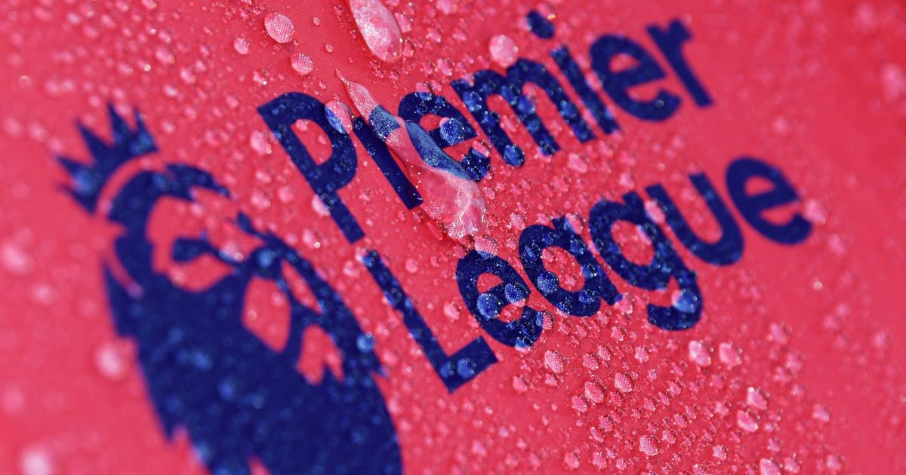
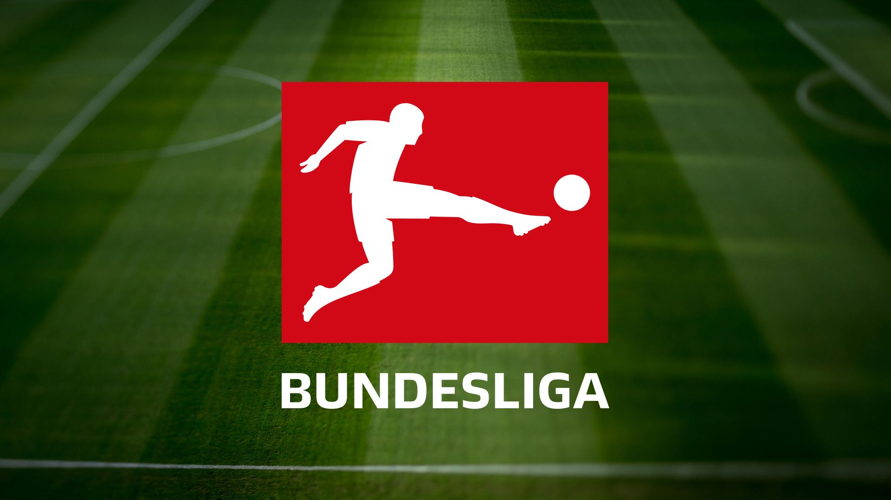

Football industry worldwide generates revenue in US $ billions. FIFA World Cup, UEFA Champions league, English Premier League, Spanish League and Italian football league are huge money earners for world football industry. Broadcasting rights, player transfer fees, endorsements, footballers’ earnings and product manufacturers’ earnings add to total turnover of global football industry.
The Premier League(often referred to as the English Premier League (EPL) outside England) is the top level of the English football league system. Contested by 20 clubs, it operates on a system of promotion and relegation with the English Football League (EFL). The Premier League is a corporation in which the member clubs act as shareholders. Seasons run from August to May with each team playing 38 matches (playing all 19 other teams both home and away). Most games are played on Saturday and Sunday afternoons. The Premier League has featured 47 English and two Welsh clubs since its inception, making it a cross-border league.

The Bundesliga sometimes referred to as the Fußball-Bundesliga is a professional association football league in Germany and the football league with the highest average stadium attendance worldwide. At the top of the German football league system, the Bundesliga is Germany's primary football competition. The Bundesliga comprises 18 teams and operates on a system of promotion and relegation with the 2. Bundesliga. Seasons run from August to May. Most games are played on Saturdays and Sundays, with a few games played on weekdays. All of the Bundesliga clubs qualify for the DFB-Pokal. The winner of the Bundesliga qualifies for the DFL-Supercup.
Serie A
Serie A also called Serie A TIM due to sponsorship by TIM, is a professional league competition for football clubs located at the top of the Italian football league system and the winner is awarded the Coppa Campioni d'Italia. It has been operating for over eighty years since the 1929–30 season. It had been organized by Lega Calcio until 2010, when the Lega Serie A was created for the 2010–11 season. Serie A is regarded as one of the best football leagues in the world and it is often depicted as the most tactical national league.